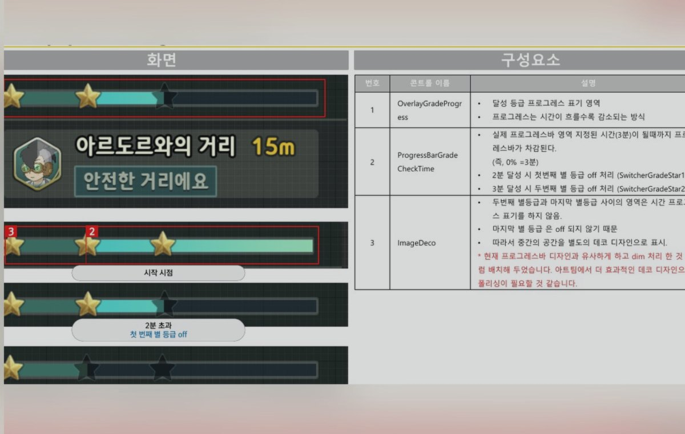
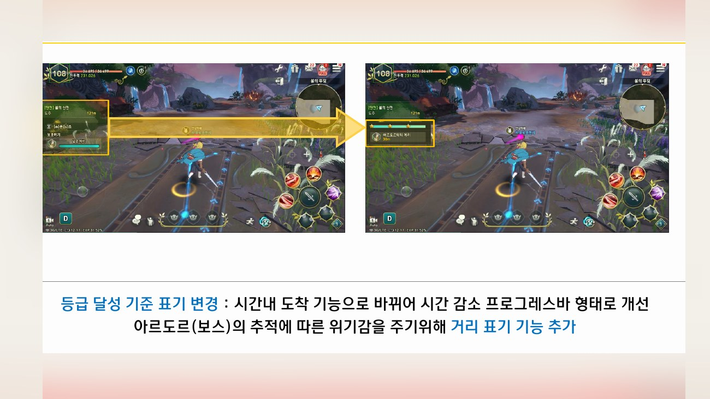
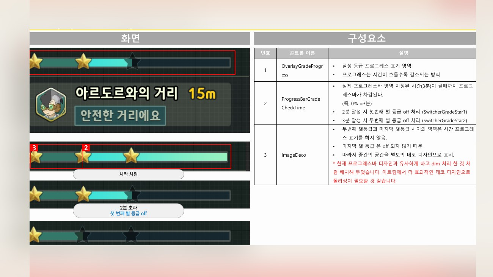
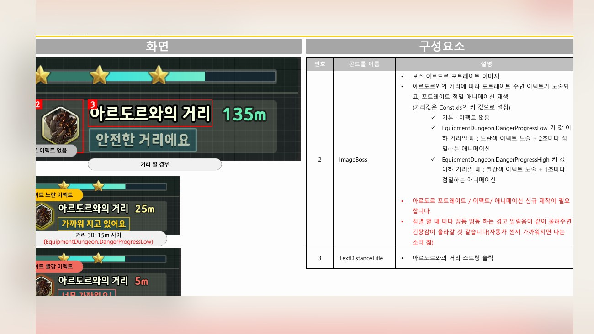
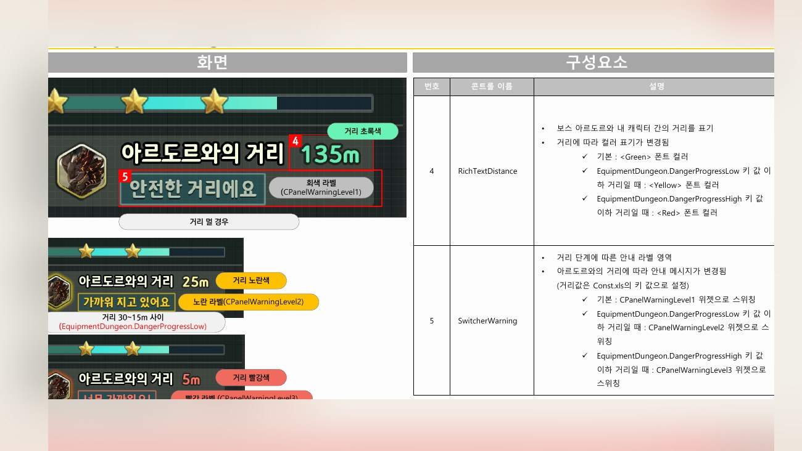

Planning Context
어떤 기획이었나
- 던전 콘텐츠에 기능이 추가되면 기존 진입과 결과 화면 안에서 새 규칙을 자연스럽게 설명해야 합니다.
- 보상과 도전 조건이 복잡해질수록 유저가 무엇을 얻고 왜 플레이하는지 명확해야 합니다.
ProjectN · Equipment Dungeon
장비 던전에 추가되는 신규 기능의 진입, 상태, 보상, 안내 흐름을 정리한 콘텐츠 UX 사례입니다.

Planning Context
Process
Deliverables
Result
장비 던전 신규 기능의 진입과 보상 흐름을 기존 콘텐츠 UX 안에 자연스럽게 연결했습니다.
Deliverable Captures
원본 문서는 포함하지 않고, 포트폴리오 확인용으로 일부 페이지만 이미지화했습니다. 슬라이드 마스터/상하단 영역은 흐림 처리했습니다.



